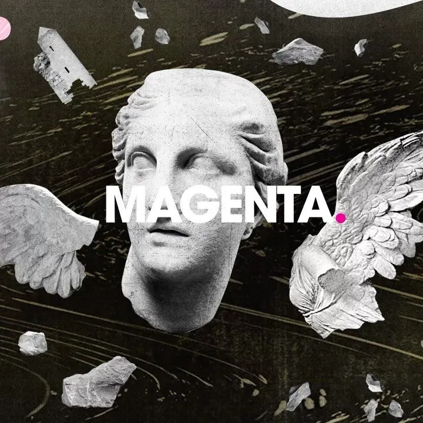

Case Study
Magenta
Huge's publication for the people who think about people, technology, and design like it's their job.

Draft copy. Pull facts and outcomes from the existing Huge case study; verify dates and contributor counts.
Magenta was Huge's bid to take design criticism seriously — a publication and a live series for readers who thought about people, technology, and design with the same care a curator brings to an exhibit. As editor-in-chief, I shaped the voice, ran the calendar, edited the contributors, and built Magenta Talks as the publication's live counterpart.
The premise
Most agency-owned publications struggle because their incentives are split: they want to attract readers and they want to attract clients, and the two ambitions tend to corrode each other. Magenta's bet was that the publication had to come first, fully — earn its readers on the merits — and that the agency benefit would follow as a by-product of being unmistakably good.
Editorial sensibility
The voice was generous to its subjects and skeptical of the industry's myths. Pieces had reporting; opinion pieces had stakes. Photography and illustration were treated with the same care as the prose. Headlines didn't chase clicks — they earned them. Every article was edited at least three times before publication.
- Bench of contributors drawn from The New Yorker, The Atlantic, WIRED, and the design press
- House style favoring specific stories over generalist think-pieces
- Independent voice — pieces critical of the agency's own clients ran when warranted
- Editorial calendar planned a quarter ahead, with room to chase what mattered
Magenta Talks
Magenta Talks was the publication's live series — quarterly knowledge-sharing sessions for creatives across disciplines. Each event was treated as a magazine column you could attend: a thesis, two or three speakers, a moderator, and time to actually talk. The series became a sought-after invite among working designers and editors.
Results
- [X]articles published
- [X]Magenta Talks events
- [X]contributors
- [X]Mreaders across run
Replace with real numbers from the existing Huge case study.
Selected pieces
- History's Most Powerful Protest Art
- What Makes a Great Book Cover
- [Add 3–5 more selected pieces from the run]